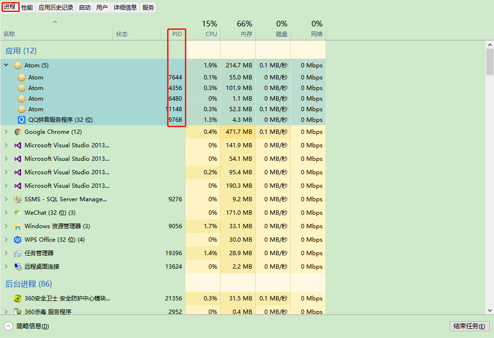
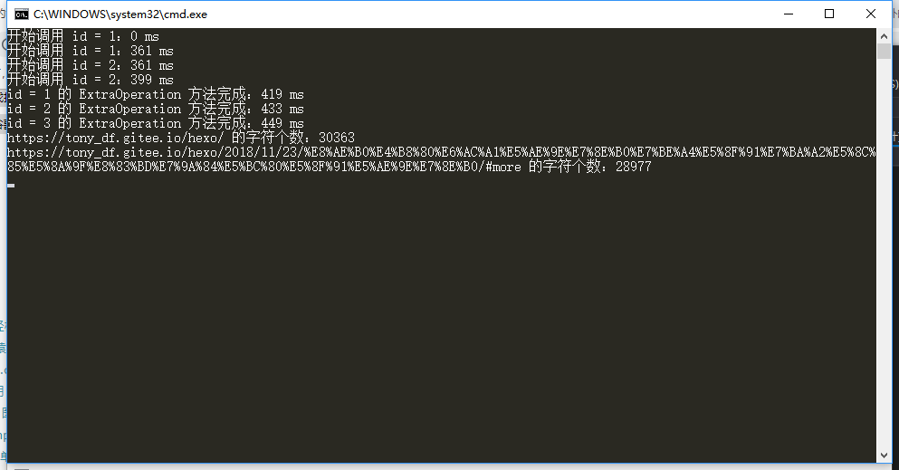
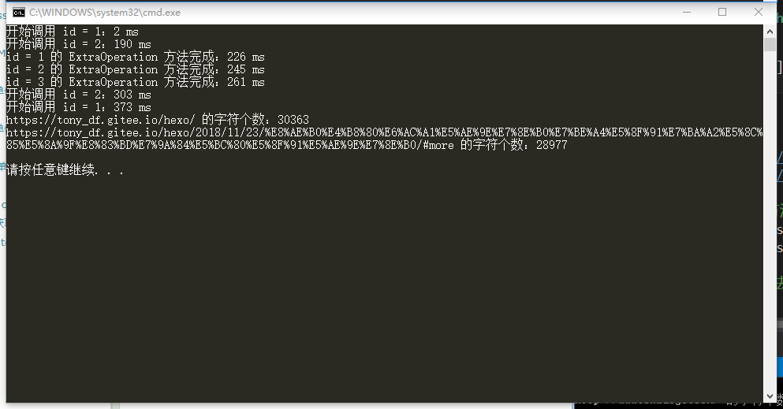
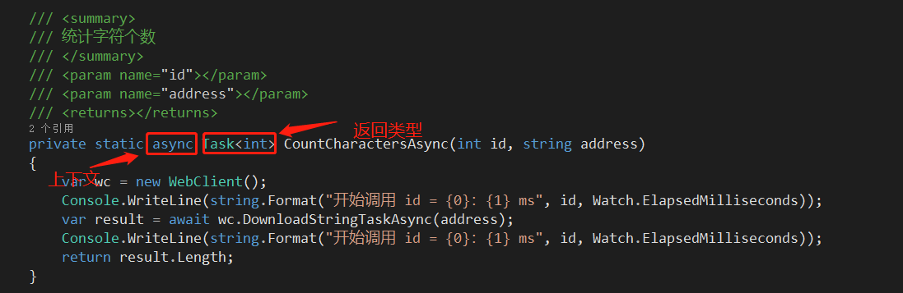

最近对项目的部分功能模块进行了代码重构，涉及到了异步编程的相关知识，也借这个机会，总结一下心得体会。
说到异步，我觉得就离不开多线程的知识，这俩货给我的感觉，就像是哥俩，老一块出现，学的时候也得关联着学，方能融会贯通，而且，就我所了解的知识层面，我以为，但凡是能把异步和多线程编程，包括：c#,vb,java,php,ruby,python…目前就了解这么多，你懂得
玩的溜的，基本都是高手，不管是何种开发语言（咳咳，何种开发语言主要是服务端语言）对了，有个特例，就是最近比较非常火的,也是我最近正在学习的nodejs，这货天赋异禀，底层是c++写的，上层开放的是JavaScript接口，依赖google的v8引擎（渲染JavaScript贼快贼溜），基本上所有原生的方法全特么是异步的，因为node是单线程的，所以这点可以说是非常贴心了，效率和稳定性也是杠杠的，当然大部分的函数，node也封装了同步的方法，供开发者选择，而且，据了解，之前挺火的一些虚拟货币网络，也都提供了nodejs的接口，所以，看着这么前沿，牛叉的东西出现，小弟也利用了一些业余时间去了解和学习，现处于只了解以上扯皮内容的阶段…😄
好了扯远了，回到高手的话题来
前面说到，我觉得只要能把异步编程和多线程玩的溜的哥们或姐们，都是高手，为啥这么说？原因有三
其一、这块内容，涉及的知识点众多，能真正了都解透彻的人，并不太多，大多数处于一知半解的状态（我算一个）；）业务逻辑变得更加混乱，会一定程度导致开发效率降低；
其二、虽然利用异步和多线程可以很大程度提高效率，但由于程序写法上可能会复杂许多，导致代码看起来不那么清晰（大神请忽略
其三、并不是所有的业务都适合异步和多线程的，尤其是在使用一些多线程的方法时，很容易因为写法不当，导致一些更加严重的问题（比如资源复用，变量重写等）
所以，只有基础知识够扎实，实践经验够丰富的高手，才能把这些知识使起来显得那么游刃有余。
嚯嚯，说的好像有点夸张了，其实异步编程没那么可怕，接下来我们就来一起降服这头妖兽，让它为我所用（说大话不犯法）
对了，这只是篇笔记性质的博文，内只是自己的一些总结，不保证正确，如有错误，盼谅解，盼雅正~
1.什么是异步？
我理解，异步顾名思义，不一样的步伐；
在程序里，系统会在启动程序时，在内存中创建一个进程，而在进程里，又有多个线程组成，所谓异步，就是在实现某个任务时，主线程派生出去其他的线程去完成，他们是相互独立的。
一个进程可以包含多个不同状态的线程，来执行不同的任务。

在实际当中，我们遇到的，编写的大部分程序都是单线程的，然而有时候我们的项目会对效率有更高的要求，此时当我们在重构系统的时候就要考虑一下采用异步的结构来实现之前的功能了，而在微软的技术体系下，当.net的框架发展到.net4.5的版本时，用c#来实现异步编程似乎有了官方公式一样，变得简单了起来，用async和await关键字和Task.Run来实现异步编程，看起来不错。
来看一下代码(这并不是我的项目中用到的代码，是另一位博主的教学代码，感觉很不错，稍加修改，后面会贴上自己项目的项目代码)
1 | //创建计时器 |
来看一下执行结果

发现耗费时间最长的是在头两次请求url上，而整个程序我们是同时在做了两件没什么关联的事儿，那么能不能让他们各干各的，在执行A的时候，同时去执行B，干完为止。
看一下修改后的程序
1 | //创建计时器 |
再看一下改动后的执行结果怎样

对比后发现，修改后的代码，执行速度快了很多，而且，我们没有启用新的线程哦，只是纯粹用到了异步的知识
第二段代码里我加了“改动”标识和第一段的区别，看起来就好像是写作文改了下写作格式，效率就提上去了，神奇的地方在哪里呢
1)、从 Main 方法执行到 CountCharactersAsync(1, url1) 方法时，该方法会立即返回，然后才会调用它内部的方法开始下载内容。该方法返回的是一个 Task
2)、这样就可以不必等 CountCharactersAsync(1, url1) 方法执行完成就可以继续进行下一步操作。到执行 CountCharactersAsync(2, url2)方法时，跟1)一样返回 Task
3)、然后，Main 方法继续执行三次 ExtraOperation 方法，同时两次 CountCharactersAsync 方法依然在持续工作。
4)、t1.Result 和 t2.Result 是指从 CountCharactersAsync 方法调用的 Task
2.async/await 结构
在程序开发中，很多默认封装好可直接调用的类或方法，都会以Async来代表异步进行
async/await 结构可以分成三个部分来理解
1)、调用方法：该方法调用异步方法，然后在异步方法执行其他任务时继续向下进行；（第二段代码中的main方法即为调用方法）
2)、异步方法：该方法异步执行工作，然后立刻返回到调用方法；（CountCharactersAsync即为异步方法）
3)、await表达式：用于异步方法内部，指出需要异步执行的任务。一个异步方法可以包含多个 await 表达式（不存在 await 表达式的话 IDE 会发出警告）。（在CountCharactersAsync中await wc.DownloadStringTaskAsync(address)为await运算）
3.异步方法
异步方法：在执行完成前立即返回调用方法，在调用方法继续执行的过程中完成任务。
语法分析：
（1）关键字：方法头使用 async 修饰。
（2）要求：包含N（N>0）个 await 表达式（不存在 await 表达式的话 IDE 会发出警告），表示需要异步执行的任务。
（3）返回类型：只能返回 3 种类型（void、Task 和 Task
（4）参数：数量不限，但不能使用 out 和 ref 关键字。
（5）命名约定：方法后缀名应以 Async 结尾。
（6）其它：匿名方法和 Lambda 表达式也可以作为异步对象；async 是一个上下文关键字；关键字 async 必须在返回类型前。

好了，今天的博文就先到这里了，只介绍了异步相关的内容，以后有时间，再继续聊这块，整理了一下知识点，我也该去重构自己的项目代码了(┬＿┬)